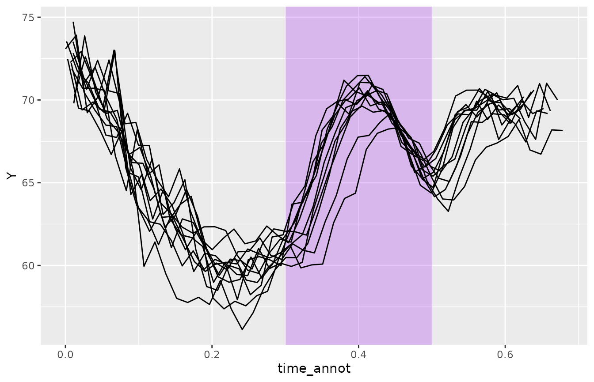
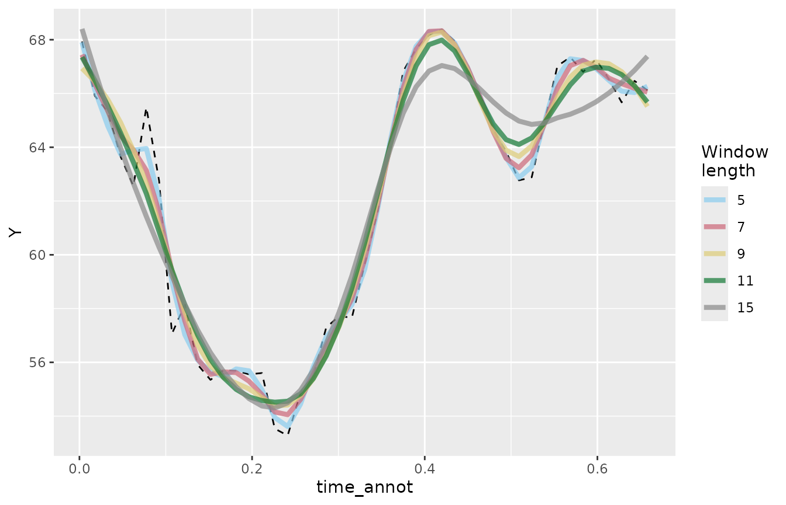
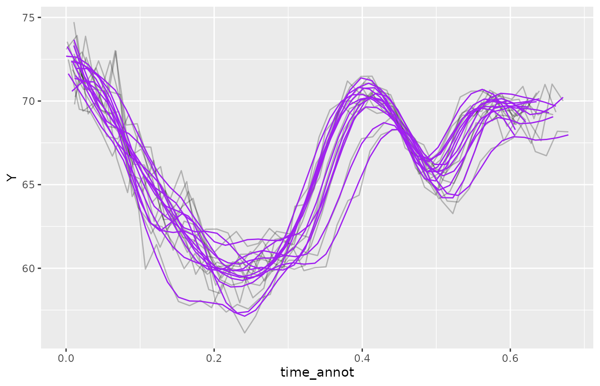
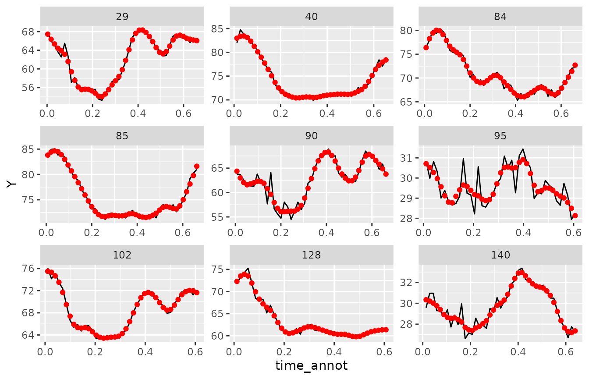
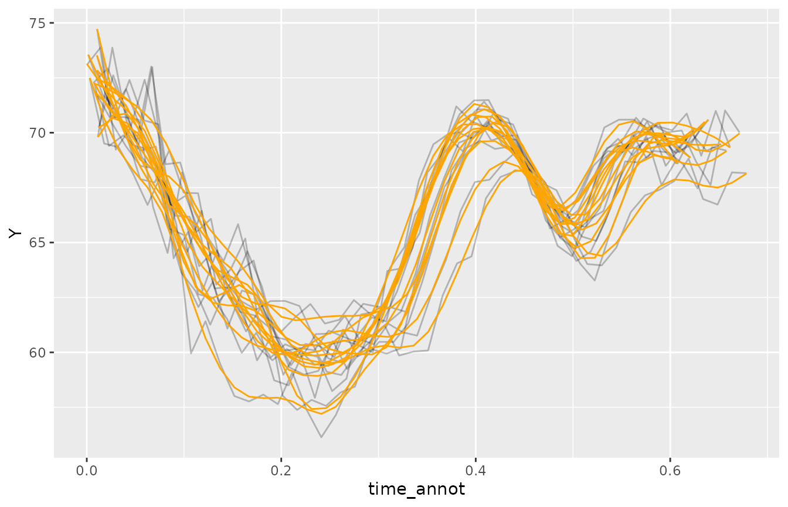
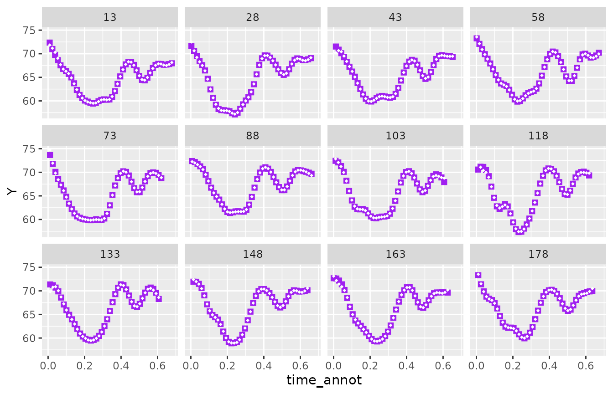
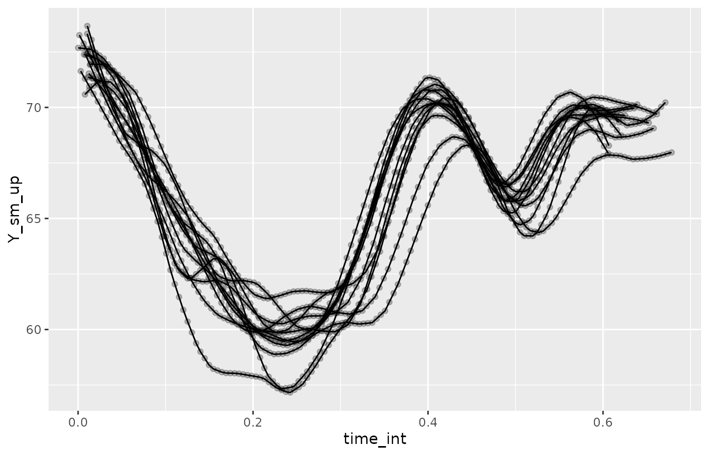
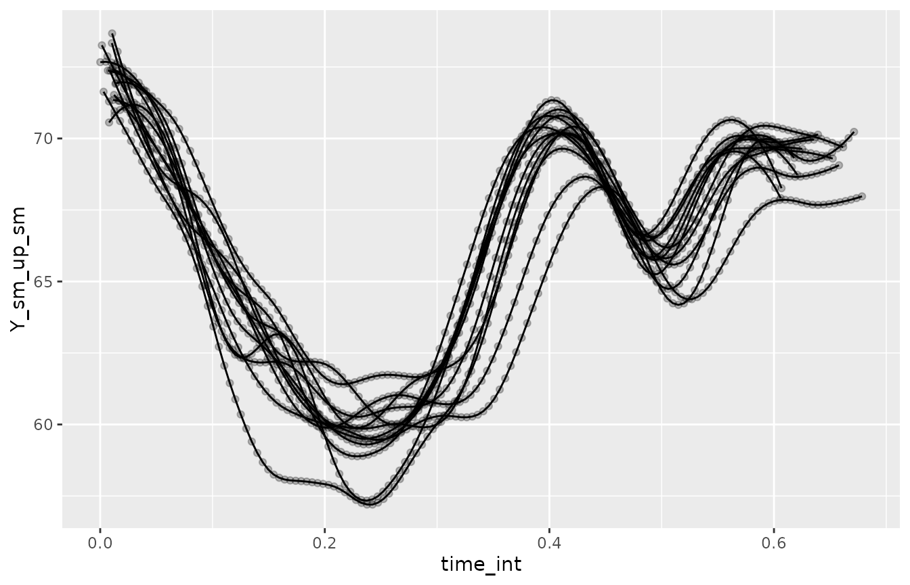

Introduction
This vignette illustrates how to smooth articulator displacement signals using Savitzky-Golay or Butterworth filters, and how to resample (usually, upsample) the signals.
First, let’s attach the tidyverse packages and rticulate.
library(tidyverse)
#> ── Attaching core tidyverse packages ──────────────────────── tidyverse 2.0.0 ──
#> ✔ dplyr 1.1.4 ✔ readr 2.1.5
#> ✔ forcats 1.0.0 ✔ stringr 1.5.1
#> ✔ ggplot2 3.5.1 ✔ tibble 3.2.1
#> ✔ lubridate 1.9.4 ✔ tidyr 1.3.1
#> ✔ purrr 1.0.4
#> ── Conflicts ────────────────────────────────────────── tidyverse_conflicts() ──
#> ✖ dplyr::filter() masks stats::filter()
#> ✖ dplyr::lag() masks stats::lag()
#> ℹ Use the conflicted package (<http://conflicted.r-lib.org/>) to force all conflicts to become errors
library(rticulate)
library(rcartocolor)Now let’s read the sample data in the file it01-dlc.tsv.
This file contains ultrasound tongue imaging data of an Italian speaker
uttering target words in a frame sentence. The sample data has only two
target words: pata and pada.
DeepLabCut was used to track 14 points (knots): 11 points on the midsagittal tongue surface plus 3 extra points corresponding to the hyoid bone, the base of the short tendon the base of the mandible.
The 11 lingual knots form the tongue spline. Two extra splines are formed by the line connecting the hyoid knot with the mandible knot (Hyoid-Mandible, HM) and the line connecting the short tendon knot with the mandible knot (Short tendon-Mandible, STM).
The DLC-tracked points were extracted from each ultrasonic frame within an interval that encompasses one syllable preceding the target word, the target word, and one syllable following the target word.
it01_dlc_path <- system.file("extdata/it01-dlc.tsv", package = "rticulate")
it01_dlc <- read_aaa(it01_dlc_path) |>
# Let's rename some columns.
rename(
date_time = `Date Time of recording`,
time_rec = `Time of sample in recording`,
time_annot = `Time of sample in annot`
)
#> Rows: 521 Columns: 36
#> ── Column specification ────────────────────────────────────────────────────────
#> Delimiter: "\t"
#> chr (4): Client family name, Date Time of recording, Prompt, Annotation Title
#> dbl (32): Time of sample in recording, Time of sample in annot, X0 DLC_Tongu...
#>
#> ℹ Use `spec()` to retrieve the full column specification for this data.
#> ℹ Specify the column types or set `show_col_types = FALSE` to quiet this message.
it01_dlc
#> # A tibble: 7,815 × 12
#> `Client family name` date_time time_rec time_annot Prompt `Annotation Title`
#> <chr> <chr> <dbl> <dbl> <chr> <chr>
#> 1 it01 29/11/201… 0.670 0.0087 Dico … ultrasound
#> 2 it01 29/11/201… 0.670 0.0087 Dico … ultrasound
#> 3 it01 29/11/201… 0.670 0.0087 Dico … ultrasound
#> 4 it01 29/11/201… 0.670 0.0087 Dico … ultrasound
#> 5 it01 29/11/201… 0.670 0.0087 Dico … ultrasound
#> 6 it01 29/11/201… 0.670 0.0087 Dico … ultrasound
#> 7 it01 29/11/201… 0.670 0.0087 Dico … ultrasound
#> 8 it01 29/11/201… 0.670 0.0087 Dico … ultrasound
#> 9 it01 29/11/201… 0.670 0.0087 Dico … ultrasound
#> 10 it01 29/11/201… 0.670 0.0087 Dico … ultrasound
#> # ℹ 7,805 more rows
#> # ℹ 6 more variables: knot <dbl>, spline <chr>, X <dbl>, Y <dbl>,
#> # frame_id <int>, displ_id <dbl>We will be smoothing the displacement of the tongue knots, so let’s filter the data.
it01_tongue <- it01_dlc |>
filter(spline == "DLC_Tongue")Finally we can check the mean sampling frequency (frame rate) of the data. We will need this later, for the Butterworth filter.
it01_dlc |>
group_by(displ_id) |>
mutate(dt = time_annot - lag(time_annot)) |>
summarise(mean_dt = mean(dt, na.rm = TRUE)) |>
summarise(mean_fs = round(mean(1/mean_dt)))
#> # A tibble: 1 × 1
#> mean_fs
#> <dbl>
#> 1 67The mean sampling frequency is 67 frames per second, i.e. 67 Hz.
Let’s take a look at the displacement trajectories of knot 8 (which tracks to the tongue blade) along the Y axis (this will roughly indicate the tongue blade displacement to/from the from hard palate/alveolar ridge. The purple rectangle indicates approximately the tongue tip gesture of the second consonant of the target words pata and pada.
it01_tongue |>
filter(knot == "8") |>
ggplot(aes(time_annot, Y, group = date_time)) +
annotate("rect",
ymin = -Inf, ymax = Inf, xmin = 0.3, xmax = 0.5,
alpha = 0.25, fill = "purple") +
geom_line()
The displacement trajectories are very jagged, due to imprecisions in the DLC tracking algorithm.
Let’s proceed to smooth the trajectory using filtering techniques from signal processing. Here, we will use a Savitzky-Golay filter and a Butterworth filter.
Savitzky-Golay filter
A Savitzky-Golay filter fits local polynomial regressions and usually produces great results. The user has to specify the polynomial order and the length of the moving window used in the fitting procedure (i.e. the number of consecutive observations to use).
The default order (second-order, 2) is generally fine.
As for the window length, we recommend trying a few lengths and picking
a length that visually generates smoothed curves that are a good
compromise between smoothing the original jagged signal without creating
obvious artefacts (such as very different amplitudes in peaks and
valleys). The larger the window, the greater the smoothing effect. Note
that the window length is dependent on the sampling frequency: greater
sampling frequencies require winder windows.
In the following code, we plot the result of smoothing one signal using a window length of 5, 7, 8, 11, and 15. Ideally you would want to do this for a bunch of trajectories.
sg_plot <- it01_tongue |>
filter(displ_id == 29) |>
ggplot(aes(time_annot, Y)) +
geom_line(linetype = "dashed")
for (wl in c(5, 7, 9, 11, 15)) {
sg_plot <- sg_plot +
geom_line(
aes(
y = filter_signal(Y, order = 2, window_length = {{ wl }}, apply = 2),
colour = as.factor({{ wl }})
), linewidth = 1.5, alpha = 0.7
)
}
sg_plot + scale_colour_carto_d(palette = "Safe", name = "Window\nlength")
A window length of 11 and 15 clearly distorts the original signal, while 5 and 7 work generally well. Let’s go with 7.
It’s important to remember to group the data by displ_id
when mutating, so that smoothing is applied to each displacement signal
individually (below, we do it with the new .by
argument).
it01_tongue <- it01_tongue |>
mutate(
Y_sm = filter_signal(Y, order = 2, window_length = 7, apply = 2),
.by = displ_id
)
it01_tongue |> select(time_annot, Y, Y_sm)
#> # A tibble: 5,731 × 3
#> time_annot Y Y_sm
#> <dbl> <dbl> <dbl>
#> 1 0.0087 32.9 32.4
#> 2 0.0087 45.6 44.6
#> 3 0.0087 58.9 57.5
#> 4 0.0087 69.6 68.4
#> 5 0.0087 76.5 76.1
#> 6 0.0087 83.3 82.7
#> 7 0.0087 79.4 79.6
#> 8 0.0087 75.9 76.1
#> 9 0.0087 71.9 72.4
#> 10 0.0087 69.0 67.4
#> # ℹ 5,721 more rowsWe can now plot the smoothed displacement trajectories on top of the original ones.
it01_tongue |>
filter(knot == "8") |>
ggplot(aes(time_annot, Y, group = date_time)) +
geom_line(alpha = 0.25) +
geom_line(aes(y = Y_sm), colour = "purple")
Let’s sample 9 trajectories from any knot.
set.seed(13579)
kdi <- sample(unique(it01_tongue$displ_id), 9)
it01_tongue |>
filter(displ_id %in% kdi) |>
ggplot(aes(time_annot, Y)) +
geom_line() +
geom_point(aes(y = Y_sm), colour = "red") +
facet_wrap(vars(displ_id), scales = "free")
Butterworth
A Butterworth filter is a type of band filter and when set up as a low-pass band filter it effectively removes higher frequency fluctuations in the signal.
A cut-off frequency of 10-20 Hz works for most articulatory signals, again it’s sensible to try a few values. Here we go with 10 Hz. The sampling frequency also has to be specified.
it01_tongue <- it01_tongue |>
mutate(
Y_smb = filter_signal(Y, filter = "butter", cutoff_freq = 10, sampling_freq = 67),
.by = displ_id
)
it01_tongue |> select(time_annot, Y, Y_smb)
#> # A tibble: 5,731 × 3
#> time_annot Y Y_smb
#> <dbl> <dbl> <dbl>
#> 1 0.0087 32.9 32.9
#> 2 0.0087 45.6 45.6
#> 3 0.0087 58.9 58.9
#> 4 0.0087 69.6 69.6
#> 5 0.0087 76.5 76.5
#> 6 0.0087 83.3 83.3
#> 7 0.0087 79.4 79.4
#> 8 0.0087 75.9 75.9
#> 9 0.0087 71.9 71.8
#> 10 0.0087 69.0 68.9
#> # ℹ 5,721 more rowsLet’s plot the Butterworth-smoothed trajectories.
it01_tongue |>
filter(knot == "8") |>
ggplot(aes(time_annot, Y, group = date_time)) +
geom_line(alpha = 0.25) +
geom_line(aes(y = Y_smb), colour = "orange")
Let’s compare the Savitzky-Golay and the Butterworth filter. They produce very similar results.
it01_tongue |>
filter(knot == "8") |>
ggplot(aes(time_annot, Y, group = date_time)) +
geom_point(aes(y = Y_sm), pch = 15, size = 2, colour = "purple") +
geom_point(aes(y = Y_smb), pch = 18, size = 1, colour = "white") +
facet_wrap(vars(displ_id))
Resampling
It is usually a good idea to upsample the smoothed signals especially when one wants to calculate the velocity of the displacement signal.
The package rticulate provides users with a
resample_signal() function that uses linear interpolation
to resample a signal. In this section, we will see how to upsample the
displacement signals of knot 8.
Upsampling with linear interpolation means that the upsampled signal will have to be smoothed. We will do that at the end of this section although the procedure is the same as the one we have seen above.
Let’s upsample the Y_sm signal. The
resample_signal() function takes three main arguments:
- The sample to resample, here
Y_sm. - The column containing the time information, here
time_annot. - The resampling factor, here
3(meaning the sampling rate will be increased by a factor of 3).
Since resampling changes the number of rows in the tibble, we need to
use reframe() rather than mutate. And of course we need to
use the .by argument so that upsampling is done for each
signal individually.
it01_tongue_up <- it01_tongue |>
reframe(
resample_signal(Y_sm, time_annot, by = 3),
.by = displ_id
)
# Nothing exceptional here, just doing some wrangling to get the info back
it01_tongue_up <- it01_tongue_up |>
left_join(y = it01_tongue |> select(Prompt, spline, knot, displ_id) |> distinct()) |>
rename(Y_sm_up = signal_int)
#> Joining with `by = join_by(displ_id)`
it01_tongue_up
#> # A tibble: 17,193 × 6
#> displ_id time_int Y_sm_up Prompt spline knot
#> <dbl> <dbl> <dbl> <chr> <chr> <dbl>
#> 1 5 0.0087 32.4 Dico pada lentamente DLC_Tongue 0
#> 2 5 0.0136 32.5 Dico pada lentamente DLC_Tongue 0
#> 3 5 0.0185 32.6 Dico pada lentamente DLC_Tongue 0
#> 4 5 0.0234 32.7 Dico pada lentamente DLC_Tongue 0
#> 5 5 0.0283 32.8 Dico pada lentamente DLC_Tongue 0
#> 6 5 0.0331 32.9 Dico pada lentamente DLC_Tongue 0
#> 7 5 0.0380 32.9 Dico pada lentamente DLC_Tongue 0
#> 8 5 0.0429 33.0 Dico pada lentamente DLC_Tongue 0
#> 9 5 0.0478 33.0 Dico pada lentamente DLC_Tongue 0
#> 10 5 0.0527 33.1 Dico pada lentamente DLC_Tongue 0
#> # ℹ 17,183 more rowsLet’s plot knot 8!
it01_tongue_up |>
filter(knot == 8) |>
ggplot(aes(time_int, Y_sm_up, group = displ_id)) +
geom_point(alpha = 0.25) +
geom_line()
It looks good, but we do need to apply a filter so that we get smoother signals where the interpolation created straight lines.
it01_tongue_up <- it01_tongue_up |>
mutate(
Y_sm_up_sm = filter_signal(Y_sm_up, order = 2, window_length = 7, apply = 2),
.by = displ_id
)
it01_tongue_up |>
filter(knot == 8) |>
ggplot(aes(time_int, Y_sm_up_sm, group = displ_id)) +
geom_point(alpha = 0.25) +
geom_line()